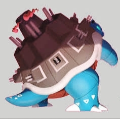
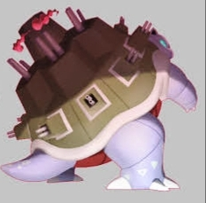

What is Gigantamax Blastoise?
Gigantamax Blastoise is basically Blastoise taken to an extreme form. It’s not just a visual upgrade—the entire battle presence changes once it Gigantamaxes.
- Its shell grows massive with reinforced cannons
- It gains the signature move G-Max Cannonade
- It becomes a very bulky Water-type raid boss
- Fights usually last longer compared to standard raids
Type & Basic Traits
- Type: Water
- Weak to: Electric, Grass
- Resists: Fire, Steel, Water, Ice
Why Gigantamax Blastoise Feels Important
This is one of those Gigantamax raids where bulk really stands out. You don’t just rush it down—you actually have to deal with a long, steady fight.
- Extremely tanky compared to regular raid bosses
- Can pressure teams with strong Water-type damage
- Usually appears in limited-time Max Raid events
- Popular among collectors who focus on Gigantamax forms
Difficulty Level
- Raid Tier: High (Gigantamax level)
- Recommended Trainers: 8–15+
- Why it feels harder:
- Very high HP pool
- Consistent Water-type damage output
- Weather boost can make it noticeably tougher
Signature Move: G-Max Cannonade
This is Blastoise’s defining move in Gigantamax form.
- Exclusive Gigantamax Water-type attack
- Deals damage over time instead of a single hit
- Gradually wears down teams during the fight
- Forces trainers to stay consistent rather than rushing
Best Counters (Dynamax / Gigantamax Focus)
Electric types are your safest option here.
- Gigantamax Toxtricity
- Gigantamax Pikachu
- Dynamax Raikou
Grass types work well too, especially for longer survivability.
- Gigantamax Venusaur
- Gigantamax Rillaboom
- Dynamax Venusaur
Simple approach:
- Lead with Electric attackers for damage
- Use Grass types when you need stability
- Avoid relying on Fire types—they don’t perform well here
Weather Impact
- Rainy weather makes Blastoise much stronger and harder to deal with
- Sunny weather is the best condition for raiders since it boosts Grass counters
Catch CP Range
After the raid, CP depends on whether weather boost is active:
- Normal conditions: ~1500–1700 CP
- Weather boosted: ~1800–2100 CP
Shiny Version
- Shiny Blastoise has a lighter blue body with a slightly greener shell tone
- Gigantamax shiny form keeps the same color changes but looks more intense due to size and effects
- It appears rarely during specific raid rotations
PvE / PvP / Raid Use
Raids (PvE)
- Decent Water attacker when fully powered up
- Still generally outclassed by top-tier Water attackers like Gigantamax Inteleon
PvP
- Gigantamax form is rarely used in PvP
- Regular Blastoise with Hydro Cannon is more practical for battles
Raids (as a boss)
- Functions more as a tanky endurance boss than a fast damage dealer
Common Raid Mistakes
- Bringing Fire-type attackers thinking they can brute force it
- Not using Electric types at all
- Ignoring weather conditions during the raid
- Underestimating how long the fight can last
Evolution Line
- Squirtle → Wartortle → Blastoise → Gigantamax Blastoise
- Requires Blastoise with Gigantamax capability unlocked
Is Gigantamax Blastoise Worth Raiding?
Gigantamax Blastoise is one of those raids that feels more like a “collection + experience” boss rather than something you rush repeatedly for meta value.
It’s useful, but not essential unless you specifically enjoy Gigantamax collecting or want a bulky Water-type option in your roster.
When It Feels Worth Doing
For collectors and completionists
- Gigantamax forms are usually tied to limited events
- They’re rare, so grabbing one adds value to your collection
During special raid events
- Higher chances of shiny encounters
- More active lobbies with easier matchmaking
- Bonus raid rewards during boosted rotations
When You Can Skip It
If you’re focused on top-tier Water attackers
- There are stronger Water-type damage dealers available
- More efficient raid attackers will usually outperform it in raw DPS
If you’re thinking about PvP
- Gigantamax Blastoise doesn’t really see practical use in PvP formats
- Regular Blastoise with Hydro Cannon is still more useful for battles
If you care about raid efficiency
- These raids take longer due to its high bulk
- Reward-per-minute is lower compared to faster raid bosses
Simple Verdict
If you enjoy collecting Gigantamax Pokémon or want something tanky for fun raids, it’s worth doing a few runs.
But if your focus is strictly meta performance or fast raid farming, this is more of an optional raid than a priority target.
Raid Boss Details — Gigantamax Blastoise
Gigantamax Blastoise is one of those raid bosses where the difficulty doesn’t come from sudden knockouts, but from how long the fight drags on. It’s built to slowly wear down your team while you try to maintain consistent damage.
Basic Raid Profile
- Battle Style: Long fights with high HP and steady pressure
- Type: Water
- Raid Tier: Gigantamax (high-difficulty event boss)
- Role: Defensive, tank-style raid boss
Raid Difficulty Breakdown
| Factor | Level |
|---|---|
| HP | Very high |
| Attack pressure | Moderate to high |
| Fight duration | Slow-paced |
| Recommended group size | 8–15+ trainers |
| Skill requirement | Moderate |
Typing & Battle Style
- Pure Water-type boss
- Very bulky and built for endurance fights
- Focuses more on surviving than quick knockouts
Weaknesses
The easiest way to handle this raid is to stick to its core weaknesses:
- Electric-type attacks
- Grass-type attacks
Resistances
- Fire
- Water
- Ice
- Steel
What Makes This Raid Tough
The main challenge here is not burst damage—it’s the constant pressure over a long fight.
G-Max Cannonade
- Signature Gigantamax move
- Deals continuous Water-type pressure over time
- Gradually forces teams into healing or recovery cycles
Slow attrition style
- You won’t get wiped instantly
- Instead, your team gets worn down over time
- Unprepared groups usually struggle to keep up
What Makes It Dangerous
- Very high HP makes fights feel long
- Constant Water pressure punishes weak teams
- Rainy weather makes it noticeably harder
- Unbalanced teams get drained over time
Best Counter Strategy
Electric attackers (primary choice)
- Fastest way to reduce HP
- Best overall damage efficiency
Grass attackers (backup option)
- More stable survivability
- Good into Water pressure
Balanced team approach
- Mix damage with support roles
- Helps sustain longer fights
Weather Impact
- Rainy weather makes Blastoise significantly tougher
- Sunny weather benefits Grass counters the most
- Neutral weather keeps the fight more balanced
After the Raid (Catch Phase)
Once the raid is over, catching is fairly straightforward, but a few things matter:
- Higher boss CP can make consistency slightly harder
- Shiny chance depends on active event bonuses
- Premier Balls depend on your damage contribution
Typing, Weaknesses & Resistances — Gigantamax Blastoise
Typing
- Type: Water
- Battle style: Bulky raid boss with steady Water-type damage
- Overall feel: Designed more for endurance than quick knockouts
Weaknesses
The fight becomes much easier if you stick to its core weaknesses:
- Electric-type attacks
- Grass-type attacks
Resistances
These are the types that don’t perform well in this raid, so avoid building your team around them:
- Fire (heavily resisted)
- Water (mirror matchup, reduced effectiveness)
- Ice (reduced damage output)
- Steel (not very effective)
Type Effectiveness Overview
| Type | Result |
|---|---|
| Electric | Super effective |
| Grass | Super effective |
| Fire | Not effective |
| Water | Not effective |
| Ice | Reduced damage |
| Steel | Reduced damage |
Best Counters — Gigantamax Blastoise
Gigantamax Blastoise goes down fastest when you stick to Electric and Grass attackers. The real difference in this raid comes from how well your team can keep up damage over a long fight rather than quick bursts.
Electric Counters (Fastest Clear Option)
Gigantamax Toxtricity
- One of the strongest Electric attackers available
- Very high damage output with solid bulk
- Usually the best option if you want faster raid clears
Gigantamax Pikachu
- Consistent Electric damage throughout the fight
- Easy to use in longer raid battles
- Reliable even in mixed teams
Dynamax Zapdos
- Strong overall Electric attacker
- Good option if you don’t have Gigantamax units built
- Slightly less bulky but still effective
Grass Counters (Safer, More Stable Option)
Gigantamax Venusaur
- Balanced between damage and survivability
- Very consistent in long raid fights
- Easy to fit into most raid teams
Gigantamax Rillaboom
- Strong Grass-type damage with good durability
- Works well in coordinated groups
- Reliable when raids get prolonged
Dynamax Venusaur
- Solid DPS option with good stamina
- Less flashy but very dependable
- Useful if you don’t have Gigantamax versions
How to Build Your Team
Instead of thinking in rigid “best team” formats, it’s better to think in terms of how the raid feels in real time.
If you want faster clears:
- Go heavy on Electric attackers
- Stack high DPS Pokémon like Toxtricity and Raikou
If you want safer clears:
- Use Grass types for stability
- Mix in tankier options like Rillaboom or Venusaur
If you want balance:
- Mix Electric and Grass instead of committing fully to one type
What to Avoid in This Raid
Some types simply don’t perform well here, no matter how high their CP is.
- Fire types — heavily resisted and inefficient
- Water types — poor matchup in mirror situations
- Ice and Steel — don’t contribute enough damage
Moveset Guide — Gigantamax Blastoise
Gigantamax Blastoise doesn’t rely on surprise one-shots. Instead, the difficulty comes from steady Water-type pressure combined with occasional heavy hits that slowly wear your team down over time.
Fast Moves
These are the attacks you’ll see most often during the fight:
Water Gun
- Quick, repeated Water-type damage
- Main source of constant chip pressure
- Adds up over long fights more than it looks like at first
Bite
- Dark-type fast attack used for coverage
- Less common compared to Water Gun
- Mainly there for extra variety in pressure
What matters most: Water Gun is the move you’ll feel the entire battle.
Charged Moves
Charged attacks are where the real danger spikes happen in this raid.
Hydro Pump
- High-damage Water burst attack
- Can heavily punish unprepared or weak counters
- Usually the biggest KO threat in the kit
Surf
- Lower damage than Hydro Pump
- Shows up more consistently
- Steady pressure rather than burst damage
Ice Beam
- Mainly used to check Grass-type counters
- Especially dangerous for Venusaur and Rillaboom users
- Can shift the momentum if your team relies too heavily on Grass
Overall threat pattern: Water pressure + occasional heavy charged hits
Gigantamax Signature Move
G-Max Cannonade
- Exclusive Gigantamax attack
- Applies continuous Water-type pressure over time
- Makes the fight feel like it’s constantly draining your team
- Encourages healing and rotation instead of rushing
What Makes the Fight Dangerous
- Water Gun chip damage builds up over time
- Hydro Pump can punish mistakes instantly
- Ice Beam discourages over-reliance on Grass teams
- Long fights make small mistakes more costly
How to Handle Its Moveset
Electric-based approach
- Most consistent way to handle the raid
- Reduces time spent in the fight, which reduces risk
Grass-based approach
- Still very effective overall
- Just be careful around Ice Beam
- Tankier Grass Pokémon work best here
Simple rule of thumb
- The longer you stay in the fight, the more its moveset starts to matter
- Fast clears are always safer than prolonged battles here
Weather Boost — Gigantamax Blastoise
Weather plays a big role in this raid because it affects both how hard Blastoise hits and how easily you can take it down. In some conditions, the fight can feel noticeably tougher or much more manageable.
When Blastoise Becomes Stronger
Rainy weather is where things get harder.
- Boosts all of its Water-type attacks like Water Gun, Surf, and Hydro Pump
- Increases overall damage output
- Makes the raid feel longer and more punishing
If you see rain active, expect a tougher fight than usual.
When Counters Work Best
Sunny weather is the best situation for raiders.
- Boosts Grass-type attackers
- Makes it easier to control the battle pace
- Helps stabilize longer fights with safer damage options
Windy or neutral weather usually keeps things balanced.
- No major boost for Blastoise
- Electric teams perform consistently well here
Other Weather Conditions
- Cloudy: No major impact on this matchup
- Snow: Slight shift depending on Ice Beam usage, but generally minimal effect
- Fog: Rarely changes the core strategy
How Weather Changes the Raid
| Weather | What It Feels Like in Raid |
|---|---|
| Rain | Blastoise becomes much stronger → toughest condition |
| Sunny | Grass counters shine → easiest clears |
| Windy | Balanced fight → Electric teams perform well |
| Cloudy | Neutral conditions |
| Snow | Slight defensive variation, mostly unchanged |
Quick Raid Rule
- Rainy weather → expect harder fights, use strongest Electric counters
- Sunny weather → best time to raid aggressively with Grass types
- Neutral weather → standard strategy works fine
Catch CP & CP Chart — Gigantamax Blastoise
After winning the raid, Gigantamax Blastoise will appear with a CP that depends mainly on its level and whether weather boost is active during the encounter. Your performance in the raid does not affect CP.
Catch CP Range
Normal weather conditions
- CP range: 1338 – 1409
- Usually encountered around level 20
Rainy weather (weather boosted)
- CP range: 1673 – 1761
- Higher level encounter due to weather boost
Quick CP Overview
| Condition | Level | CP Range |
|---|---|---|
| Normal weather | ~20 | 1338 – 1409 |
| Rainy weather | ~25 | 1673 – 1761 |
Shiny Comparison — Gigantamax Blastoise
The shiny version of Gigantamax Blastoise doesn’t change its stats or battle performance, but it does give the Pokémon a noticeably different color theme. It’s mostly a visual upgrade for collectors rather than a gameplay advantage.
Normal vs Shiny Appearance
Normal Gigantamax Blastoise
- Deep royal blue body
- Classic brown shell
- Grey cannons in Gigantamax form
- Overall heavy, tank-like look
Shiny Gigantamax Blastoise
- Lighter teal or turquoise body tone
- Shell shifts toward a greener shade
- Cannons appear slightly darker and more muted
- Feels more “aqua-tech” styled compared to the standard form
Visual Differences at a Glance
| Feature | Normal | Shiny |
|---|---|---|
| Body Color | Dark blue | Teal / light blue |
| Shell | Brown | Greenish tint |
| Cannons | Grey | Muted darker tone |
| Rarity | Standard | Rare / event-based |
Image Comparison

Gigantamax Blastoise
Images are used for informational and educational purposes only. All rights belong to their respective owners.

Shiny Gigantamax Blastoise
Images are used for informational and educational purposes only. All rights belong to their respective owners.
Raid Strategy Guide — Gigantamax Blastoise
Gigantamax Blastoise is not a raid you win by tanking through it. It slowly builds pressure over time, so the real key is finishing the fight before its damage and bulk start dragging your team down.
How to Approach This Raid
- Try to finish the battle as quickly as possible
- Electric attackers should lead your damage output
- Grass types work best as backup support
- Fire, Water, and Ice attackers usually slow the raid down instead of helping
Team Building in Practice
If you’re going for fast clears
- Gigantamax Toxtricity as your main damage dealer
- Gigantamax Pikachu for steady Electric pressure
- Dynamax Zapdos as a flexible backup attacker
If you want safer, longer runs
- Gigantamax Rillaboom for bulk and stability
- Gigantamax Venusaur for balanced damage and survivability
- Dynamax Tsareena as a strong Grass DPS option
Balanced approach
- Mix Electric and Grass instead of committing fully to one side
- Electric does most of the damage, Grass helps stabilize the fight
- This setup usually feels the most consistent across different weather conditions
How Weather Changes Your Plan
Rainy weather
- Blastoise hits noticeably harder
- Electric attackers become your main win condition
- Slow Grass-heavy teams tend to struggle here
Sunny weather
- Grass attackers perform much better
- Raid feels noticeably easier and more controlled
- Good time to farm multiple clears
Neutral weather
- Standard Electric + Grass mix works reliably
- No major advantage or disadvantage for either side
How the Fight Usually Plays Out
Early stage
- Build energy and establish momentum
- Try not to lose Pokémon too early
- Electric damage sets the pace of the fight
Mid stage
- This is where Hydro Pump and Surf start to matter more
- You’ll likely need some healing or rotation here
- Efficiency matters more than survival at this point
Final phase
- Focus purely on damage output
- This is where teams either finish quickly or start falling behind
- Long fights become risky because G-Max Cannonade pressure stacks up
Mistakes That Slow Teams Down
- Bringing Fire or Water types that don’t contribute meaningful damage
- Ignoring Electric attackers completely
- Running overly defensive teams that extend the fight too long
- Not adjusting strategy for Rainy weather
Small Things That Help a Lot
- Let Electric Pokémon lead your damage rotation
- Don’t overcommit Grass types in Rainy conditions
- Having at least one bulky Pokémon helps stabilize longer fights
- In most cases, faster clears are safer than defensive play
Gigantamax Mechanics — How It Works
Gigantamax is basically the most powerful version of Dynamax in Pokémon GO raids. It doesn’t just make Pokémon bigger—it changes how battles play out by adding special moves, higher durability, and longer fight dynamics.
What Gigantamax Actually Changes
- Pokémon become significantly larger than standard Dynamax forms
- Their appearance changes completely, making them visually distinct
- They gain access to a unique G-Max move instead of a normal Max Move
- Gigantamax replaces regular Dynamax for that Pokémon
Why These Raids Feel Different
- HP is much higher than normal raids, so fights last longer
- Damage pressure builds up gradually instead of quick knockouts
- Coordination matters more than individual performance
G-Max Cannonade (Blastoise Signature Move)
This is what defines Gigantamax Blastoise in raids.
- Deals Water-type damage with sustained pressure over time
- Feels less like a single hit and more like continuous strain on your team
- Encourages healing and rotation instead of pure rushing
Gigantamax Battle Flow
- Gigantamax form is temporary and lasts only for a limited time in battle
- Once it ends, Pokémon return to their normal state
- This creates a “power window” where timing matters a lot
Shield Mechanic in Max Raids
- Raid bosses can activate shields during battle
- These shields temporarily reduce incoming damage
- Teams need to break through them before full damage resumes
Max Move System (Shared Mechanics)
| Move Type | What It Does |
|---|---|
| Max Strike | Deals damage and slightly slows the opponent |
| Max Guard | Reduces incoming damage for a short time |
| Max Move | Strong type-based attack used during Dynamax/Gigantamax |
Why These Raids Require Coordination
- Bosses have significantly higher HP than normal raids
- Moves deal steady pressure instead of quick bursts
- Solo attempts are usually not realistic for most players
- Teams need to balance damage, survival, and timing
Gigantamax vs Dynamax (Simple Difference)
| Feature | Dynamax | Gigantamax |
|---|---|---|
| Size boost | Yes | Yes (larger impact visually) |
| Appearance change | No | Yes (unique form) |
| Special move | Max Move | G-Max Move |
| Availability | Common | Rare / event-based |
| Raid difficulty | Standard | High coordination required |
Dangerous Moves — Gigantamax Blastoise
The difficulty in this raid doesn’t come from one single mechanic. It comes from a mix of heavy Water-type bursts, steady chip damage, and Ice coverage that slowly punishes mistakes over time.
Moves That Can Turn the Fight Quickly
Hydro Pump
- High burst Water damage that can heavily punish weak or unprepared Pokémon
- Often the move that causes sudden knockouts
- Feels most dangerous when you’re already low on HP or mid-rotation
G-Max Cannonade
- Applies continuous Water-type pressure across the whole battle
- Slowly drains your team even when nothing “big” is happening
- Makes long fights noticeably harder to manage
Moves That Keep Pressure Steady
Surf
- Moderate but consistent damage
- Appears frequently throughout the raid
- Main reason HP slowly drops across the entire team
Ice Beam
- Mainly used to punish Grass-type counters
- Especially dangerous for Venusaur and Rillaboom users
- Can change momentum if your team relies too heavily on Grass
Constant Chip Damage
Water Gun
- Fast move that doesn’t hit hard individually
- Becomes dangerous because of how often it lands
- Builds up pressure over time rather than in single hits
How These Moves Affect the Raid
Most teams struggle here not because of one-shot moves, but because damage slowly stacks up while they try to maintain offense.
- Fire types struggle to contribute meaningful damage
- Grass teams can be punished by Ice Beam at the wrong moment
- Slow or defensive teams tend to get worn down over time
How Experienced Players Handle It
Fast-clear approach
- Use Electric attackers to shorten the fight as much as possible
- Avoid staying in long enough for pressure moves to stack
- Keep momentum focused on damage, not survival
Grass-heavy approach
- Still effective, but requires awareness of Ice Beam timing
- Works best with tankier Grass Pokémon
- Better in balanced teams than full Grass setups
Common Raid Mistakes — Gigantamax Blastoise
Most failed Gigantamax Blastoise raids don’t come down to lack of power. They usually happen because teams are built without a clear Electric core, or because players underestimate how quickly pressure builds over time.
Weak Type Choices That Slow Everything Down
One of the biggest issues is simply bringing the wrong damage types.
- Fire-types perform poorly because their damage is heavily resisted
- Water-types don’t help much due to mirror resistance
- Ice and Steel attackers contribute very little overall pressure
When too many of these appear in a lobby, the raid doesn’t fail instantly—it just becomes slow enough for pressure mechanics to take over.
Not Building Around Electric Damage
Electric attackers are what actually keep this raid under control.
- Without Electric Pokémon, fights last much longer than they should
- Longer fights mean more faint cycles and more healing breaks
- This is one of the most common reasons raids feel “close but fail”
Over-Relying on Grass Teams
Grass Pokémon are strong here, but they’re not risk-free.
- Ice Beam can heavily punish Grass-heavy lineups
- Pure Grass teams are inconsistent in longer fights
- Without Electric backup, damage drops too much in bad situations
Not Adapting to Weather Conditions
Weather has a bigger impact on this raid than most players realize.
- In Rain, Blastoise becomes noticeably stronger, but many players still use unoptimized teams
- In Sunny weather, Grass becomes much more effective, but players don’t always adjust accordingly
Slow Damage Teams Getting Overwhelmed
Teams built only for survival often struggle here.
- Tank-heavy setups don’t reduce raid pressure fast enough
- The longer the fight goes on, the more G-Max Cannonade matters
- Eventually, small chip damage adds up across the entire team
Not Reacting to Key Moves
Even strong teams can struggle if they ignore what the boss is actually doing.
- Hydro Pump can remove key attackers instantly if not respected
- Ice Beam can shift momentum against Grass-focused teams
- G-Max Cannonade slowly drains momentum if fights drag on
Lack of Coordination in Groups
Another common issue is team imbalance across players.
- Everyone bringing the same type reduces flexibility
- No balance between Electric and Grass lowers overall efficiency
- Without role distribution, raids become less stable
Slow Re-entry After Fainting
Small delays matter more than most players expect.
- Waiting too long after fainting reduces total damage output
- Even a few seconds of downtime affects tight raids
- Efficient re-entry keeps pressure consistent on the boss
Gigantamax Blastoise — PvP, PvE, Raids, Gyms & Cups Overview
Gigantamax Blastoise is built mainly for raid-style battles, so its performance shifts a lot depending on whether the mode rewards raw damage, bulk, or fast matchups.
PvE (Gyms & General Battles)
In regular gym and PvE fights, Blastoise feels more like a tank than a fast attacker.
- Its high bulk lets it stay on the field for a long time
- Water damage is steady but not top-tier compared to modern attackers
- It performs better in endurance fights than quick clears
Overall, it works fine in PvE, but it’s not the fastest option available for clearing content.
Raids
This is where Gigantamax Blastoise is actually designed to shine.
- Built around sustained Water-type pressure instead of burst damage
- Performs best in coordinated group raids
- Becomes more dangerous the longer the fight lasts due to stacking pressure mechanics
However, raids also expose its main weakness—if the team is not optimized, long fights allow pressure to build up quickly.
Gyms
As a gym defender, Blastoise is more annoying than threatening.
- High bulk makes it take time to defeat
- Can slow down attackers without strong Electric or Grass counters
- Works best as a stalling defender rather than a win condition
That said, strong meta attackers will still eventually break through without much trouble.
PvP
In PvP, Gigantamax form itself is not really part of competitive play.
- Regular Blastoise with Hydro Cannon is the preferred option
- Coverage moves like Ice Beam give better matchup flexibility
- Gigantamax mechanics don’t translate into standard PvP formats
Cups & Limited Formats
In restricted formats, Blastoise can sometimes find niche value, but it’s very situational.
- Works best in Water-themed or limited CP formats
- Can pressure teams with Hydro Cannon if shields are managed well
- Still struggles in fast-paced meta environments
Overall Performance Summary
| Mode | Performance |
|---|---|
| PvE | Decent endurance option |
| Raids | Strong (main purpose) |
| Gyms | Good defensive stall |
| Cups | Very situational |
| PvP | Not practical in Gigantamax form |
Evolution & Mega Potential — Gigantamax Blastoise
Gigantamax Blastoise comes from the classic Squirtle evolution line, but its Gigantamax form exists separately from Mega Evolution. Even though both are tied to Blastoise, they work in completely different systems and don’t overlap in battles.
Evolution Line
Everything starts from the same base Pokémon:
- Squirtle → Wartortle → Blastoise
Once you reach Blastoise, it becomes the final evolution and can branch into different forms depending on the system being used.
Two Different Power Systems
Blastoise has two separate advanced forms, but they serve completely different purposes in gameplay.
Gigantamax Blastoise is a temporary transformation used only in specific Max Raid battles. It changes appearance and unlocks the signature G-Max Cannonade, but it does not permanently alter stats.
Mega Blastoise, on the other hand, is a battle-time power boost that increases its offensive output during Mega Evolution windows, making it more relevant for raid attacking roles.
Can You Use Both?
Yes, but never together.
- Gigantamax is restricted to Max Battles and raid boss scenarios
- Mega Evolution is used in standard battles and raids as a damage boost form
- Each system operates independently, so you choose based on the battle type
How Mega Blastoise Performs
In practice, Mega Blastoise is more focused on damage output than Gigantamax form.
- Improves Water-type raid damage significantly
- Works as a solid team support attacker in raids
- Performs better in standard PvE content than Gigantamax form
However, it still competes with stronger modern Water-type attackers in raw DPS.
Where Each Form Fits Best
| Form | Best Use |
|---|---|
| Gigantamax Blastoise | Max Raid battles and special Gigantamax events |
| Mega Blastoise | Raid attacker and damage support in PvE |
Which One Is More Useful?
The answer depends on the content you’re playing.
- For raids and general PvE damage → Mega Blastoise is usually more practical
- For Gigantamax or Max Battle content → Gigantamax Blastoise is required
Stats Breakdown — Gigantamax Blastoise
Gigantamax Blastoise is designed as a durability-focused raid boss. Instead of relying on speed or burst damage, it wins battles by simply lasting longer than most teams can comfortably handle.
How Its Stats Actually Play Out in Raids
The most noticeable thing about Blastoise in Gigantamax raids is how hard it is to take down. Its overall stat profile is heavily tilted toward bulk, which changes the entire pace of the fight.
| Stat | Battle Impact |
|---|---|
| HP | Extremely high stamina, which is why raids feel long and exhausting |
| Attack | Moderate damage that builds pressure steadily rather than instantly |
| Defense | Reduces incoming damage and slows down attempts to burst it down |
| Speed | Not relevant in raids, but reflects its slow, control-based pressure style |
What This Means During the Fight
Because of its bulk-focused stats, the entire raid plays out differently compared to normal bosses.
- Fights last longer than expected, even with strong counters
- Teams need sustained damage instead of short burst attempts
- Electric Pokémon become especially valuable because they shorten the fight window
- Grass teams can work, but only if they survive long enough to maintain damage
Why It Feels So Tanky
The combination of high HP and strong defense means Blastoise doesn’t rely on one big defensive stat—it spreads durability across multiple layers. This is what makes it feel so difficult to “finish quickly” in raids.
How Players Usually Experience It
- Early phase feels manageable
- Mid-fight starts to slow down as damage stacks
- Late fight becomes a test of endurance and team efficiency
Most failed raids happen not because players deal no damage, but because the fight lasts long enough for mistakes and faint cycles to accumulate.
Stat-Based Playstyle Summary
- High bulk → forces longer fights
- Moderate attack → steady but not explosive damage
- No speed pressure → fight is decided by endurance and DPS quality
Players Requirement — Gigantamax Blastoise
Gigantamax Blastoise raids usually require more coordination than raw power. Because of its high HP and steady Water-type pressure, the number of players needed can vary a lot depending on how optimized the group is.
How Many Players You Actually Need
In most real raid situations, you’ll see a wide range like this:
- Large public lobbies generally sit around 10–15 players, where coordination is loose but still enough to clear safely
- Smaller, more organized groups can clear it comfortably with around 6–10 players if counters are strong and roles are balanced
- Highly optimized teams with top Electric attackers can push it down to around 4–6 players, especially with good weather support
- Attempts below 3 players are usually unrealistic unless everything is perfectly aligned, including counters, weather, and timing
How Weather Changes the Difficulty
Weather plays a direct role in how many players you actually need, because it affects both sides of the battle.
| Weather | What Happens | Impact on Lobby Size |
|---|---|---|
| Rainy | Blastoise deals more damage | Requires more players or stronger counters |
| Sunny | Grass counters become stronger | Can reduce required player count |
| Neutral | Balanced conditions | Standard raid setup works fine |
Why This Raid Needs So Many Players
The main reason Gigantamax Blastoise feels like a group raid is not because of sudden one-shot mechanics, but because of sustained pressure over time.
- Very high HP makes the battle naturally longer
- Water-type attacks create constant chip damage throughout the fight
- Hydro Pump can punish weak rotations or mistakes
- G-Max Cannonade slowly reduces team stability over time
FAQ — Gigantamax Blastoise
Gigantamax Blastoise is one of the most defensive Water-type Gigantamax raid bosses, and players usually have a lot of questions about it. Here are the most common ones.
What is Gigantamax Blastoise?
It is a special form of Blastoise where it grows in size and gains multiple water cannons on its shell, along with a unique G-Max move called G-Max Cannonade.
Is it different from normal Blastoise?
Yes.
- Normal Blastoise = standard Water-type Pokémon
- Gigantamax Blastoise = raid boss form with:
- Huge HP boost
- Unique appearance
- Special G-Max move
What type is it?
- Pure Water-type
- Weak to: Electric, Grass
- Resistant to: Fire, Water, Ice, Steel
How many players are needed for raids?
- 10–15 players (safe standard)
- 6–10 players (optimized groups)
- 4–6 players (expert teams only)
Is it hard to defeat?
- Medium–High difficulty
- Harder if:
- Rainy weather
- Weak counters used
- No Electric-type Pokémon
What are its best counters?
- Electric types (fastest clears)
- Grass types (safer option)
Top examples include:
- Dynamax Zapdos
- Dynamax Raikou
- Gigantamax Rillaboom
- Gigantamax Venusaur
What is G-Max Cannonade?
It is its exclusive Gigantamax move that:
- Deals Water damage
- Applies continuous pressure
- Makes long fights more dangerous
Can it be shiny?
Yes:
- Shiny version is available during specific events
- Purely cosmetic
Is it good in PvP?
- Gigantamax form is not used in PvP
- Regular Blastoise is better for PvP
Is it worth raiding?
- Worth it for collectors and Gigantamax completion
- Optional for competitive players
- Not essential for meta attackers
Pokédex Information — Gigantamax Blastoise
Gigantamax Blastoise is a rare transformation of Blastoise that appears in special Gigantamax battles. In this form, its shell transforms into a massive fortified structure equipped with powerful water cannons, emphasizing long-range pressure over mobility.
Pokédex Entry
- Species: Shellfish Pokémon
- Type: Water
- Form: Gigantamax (rare transformation state)
- Evolution Line: Squirtle → Wartortle → Blastoise
Pokédex Description
When Gigantamaxed, Blastoise undergoes a dramatic structural change that turns its shell into a heavily armed water platform.
- Its shell expands into a fortified cannon-like structure
- Multiple water cannons deploy across its back and shoulders
- The main cannon is capable of firing extremely high-pressure water blasts
Behavior in Battle
- Moves in a slow, controlled manner due to increased size
- Focuses on sustained ranged attacks rather than quick bursts
- Relies on pressure and endurance instead of speed
- Designed for extended battles rather than quick engagements
G-Max Cannonade
This is its signature Gigantamax move.
- Delivers continuous Water-type pressure during battle
- Gradually wears down opponents over time
- Reflects its siege-style combat approach
Lore Notes
- Blastoise’s cannons are said to generate extremely high water pressure
- In Gigantamax form, its firepower is greatly amplified across its entire shell system
- Its design prioritizes overwhelming force over mobility or agility
Classification Summary
| Category | Detail |
|---|---|
| Pokémon Category | Shellfish Pokémon |
| Type | Water |
| Battle Role | Defensive ranged tank |
| Gigantamax Theme | Fortified siege artillery |
Comparison Section — Gigantamax Blastoise
Gigantamax Blastoise makes the most sense when you compare how it performs against other Gigantamax starters and its own alternate forms. Instead of raw stats, the real difference comes from how each Pokémon behaves in actual raids.
Against Other Gigantamax Starters
Compared to Gigantamax Charizard
Charizard plays the complete opposite role of Blastoise in raids.
- Blastoise focuses on endurance and sustained Water pressure
- Charizard is built for aggressive, fast-paced damage output
- Blastoise survives longer, while Charizard ends fights faster
- Blastoise is easier to manage in long raids, but slower overall
In short, Charizard is about speed, while Blastoise is about stability.
Compared to Gigantamax Venusaur
This matchup is much closer and depends on team composition.
- Venusaur offers more balanced consistency across fights
- Blastoise has higher defensive stability but less flexibility
- Venusaur handles mixed situations slightly better
- Blastoise becomes stronger when the raid drags on
Both are reliable, but Venusaur feels more flexible overall.
Mega Blastoise vs Gigantamax Blastoise
Even though both forms belong to the same Pokémon, they serve completely different purposes.
- Gigantamax Blastoise is designed for raid boss-style battles with sustained pressure mechanics
- Mega Blastoise is focused on increasing damage output in standard raid fights
- Gigantamax fights feel slower and more strategic
- Mega Blastoise is more straightforward and damage-focused
If your goal is damage efficiency, Mega Blastoise usually performs better. If your goal is event-based Gigantamax content, then Gigantamax is required.
Normal Blastoise vs Gigantamax Blastoise
- Normal Blastoise is more flexible across PvP and PvE formats
- Gigantamax Blastoise is locked into specific raid systems
- Normal form has better overall usability in general gameplay
- Gigantamax form focuses more on raid pressure and event battles
How They Rank in Raid Context
Instead of a strict ranking, it makes more sense to look at roles:
- Charizard → fastest raid attacker with high burst damage
- Venusaur → balanced sustain + reliable performance
- Blastoise → defensive, endurance-focused raid presence
Each one is useful, but they excel in completely different raid styles rather than competing directly on raw strength.
Events & Availability — Gigantamax Blastoise
Gigantamax Blastoise is not something you can encounter anytime. Like most Gigantamax Pokémon, it appears only during specific event windows, which makes timing more important than grinding.
How Its Availability Works
Instead of staying in raids permanently, Gigantamax Blastoise rotates in and out of special Max Battle events. When it appears, it usually shares the spotlight with other Gigantamax starters, meaning availability is always time-limited and competitive.
You’ll typically see it during event-driven rotations such as Max Battle weekends, GO Fest-style events, or short themed raid windows where multiple Gigantamax Pokémon cycle hourly.
What the Rotation Feels Like in Practice
- Blastoise appears for short windows rather than long raid periods
- It often rotates alongside other Gigantamax starters like Charizard and Venusaur
- Availability can change within the same day depending on event scheduling
How Often It Returns
On average, Gigantamax Blastoise returns only a few times per year, usually tied to major seasonal updates or special raid-focused events.
- Most appearances happen during large-scale Pokémon GO events
- Occasionally reappears in surprise rerun weekends
- Rare outside of structured event calendars
What Happens When It Is Live
When Gigantamax Blastoise is active in raids, the entire gameplay environment shifts around it.
- More players join Max Battles due to limited availability
- Raid activity increases significantly during its rotation window
- Shiny chances and bonuses may appear during special event rules
- Rewards are often boosted to encourage participation
Simple Availability Summary
| Category | Status |
|---|---|
| Always available | No |
| Weekly rotation | No |
| Event-based raids | Yes |
| GO Fest / major events | Common appearance window |
| Random re-runs | Occasional |
Conclusion — Gigantamax Blastoise
Gigantamax Blastoise is best understood as a raid endurance test rather than a fast win condition. It doesn’t rely on burst damage or quick knockouts—instead, it slowly pressures teams into mistakes if they are not properly coordinated or optimized.
What Really Matters in This Raid
If you take away the mechanics, the fight comes down to a few core ideas:
- Electric and Grass attackers determine how quickly the raid ends
- Long fights are where Blastoise becomes most dangerous due to sustained pressure
- Coordination between players has a bigger impact than individual power
- Weather conditions can shift difficulty more than expected
Overall Impression
This is not a raid where you win by overpowering the boss instantly. Instead, success comes from keeping the fight short and controlled before pressure mechanics like G-Max Cannonade start stacking up over time.
Well-prepared teams will find it manageable, but unbalanced groups will quickly notice how much the difficulty scales with battle duration.
Related Posts
You may also find these Pokémon GO raid guides helpful: